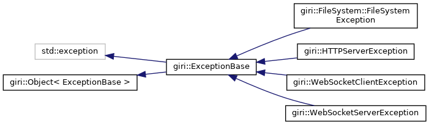
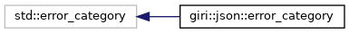
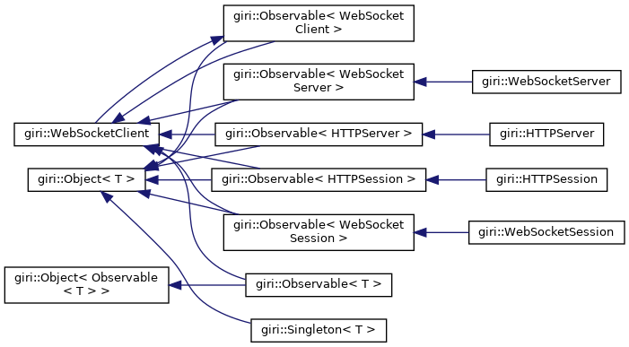

Giri's C++ Support Library
Lightweight C++ library providing everything you need to quickly create awesome applications.
Class Hierarchy
Go to the textual class hierarchy



Generated by
1.8.13


 1.8.13
1.8.13